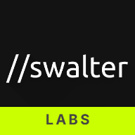
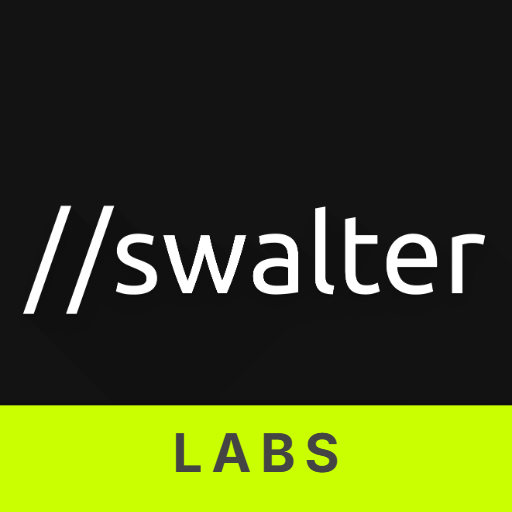

SWalter.Core
Das Fundament für .NET-Anwendungen: gemeinsame Abstraktionen, Utility-Klassen und wiederverwendbare Hilfstypen.
↗
//swalter | labs//swalter | labs / .NET-BIBLIOTHEKEN
Wiederverwendbare .NET-Bibliotheken und Werkzeuge – mit Fokus auf SOLID-Prinzipien, wartbarem Code und modernen Oberflächen.

01 / ARCHITEKTUR & TECH-STACK
Der Schwerpunkt liegt auf Windows-Anwendungen und Werkzeugen, wartbarem Code und modernen UI-Konzepten. SOLID, MVVM und Clean Code geben dabei Orientierung.
C#, XAML, PowerShell
Aktuelle .NET-Versionen, Avalonia UI
SOLID, MVVM, Clean Code
Dependency Injection, xUnit, NuGet, Azure DevOps
Die Bibliotheken werden offen entwickelt und unter der MIT-Lizenz veröffentlicht.
02 / CORE LIBRARIES
Von allgemeinen Hilfstypen bis zu UI- und Testbausteinen: Die Pakete lassen sich gezielt einsetzen und kombinieren.
Das Fundament für .NET-Anwendungen: gemeinsame Abstraktionen, Utility-Klassen und wiederverwendbare Hilfstypen.
↗Die Pakete SWalter.Core.DependencyInjection, SWalter.Core.Logging und SWalter.Core.Settings ergänzen Host-Setup, Logging-Helfer und flexible JSON-Settings.
↗Testhelfer für .NET mit AutoFixture-Datenattributen, Guard-Clause- und Dependency-Injection-Assertions.
↗Avalonia-Erweiterungen, Controls, FluentAvalonia-Themes und Behaviors. Dazu kommen Headless-Testhelfer mit SWalter.Testing.Avalonia.
↗Release- und Preview-Pakete gibt es über den MyGet-Feed.
03 / PORTFOLIO
Die Core Libraries sind vom bisherigen GitHub-Profil zu //swalter | labs umgezogen. Ausgewählte weitere Repositories aus dem bisherigen Portfolio folgen schrittweise. Den aktuellen Stand findest du in der GitHub-Übersicht.
Repositories ansehenDies ist ein privater, nicht-kommerzieller Internetauftritt.
Sebastian Walter
Kindergartenstraße 1
92348 Berg
E-Mail:
sebwalter@gmx.net
Beim Besuch dieser Webseite werden durch den Provider automatisch
technische Daten (z.B. IP-Adresse,
Browsertyp, Uhrzeit des Zugriffs) in Server-Logfiles gespeichert. Diese Daten dienen ausschließlich der
technischen Überwachung und werden nicht an Dritte weitergegeben.
Wenn Sie per E-Mail Kontakt aufnehmen, werden Ihre Angaben zur
Bearbeitung der Anfrage gespeichert. Es erfolgt
keine Weitergabe an Dritte.
Sie haben das Recht auf Auskunft, Berichtigung und Löschung Ihrer gespeicherten Daten. Bei Fragen wenden Sie sich bitte an die oben genannte E-Mail-Adresse.